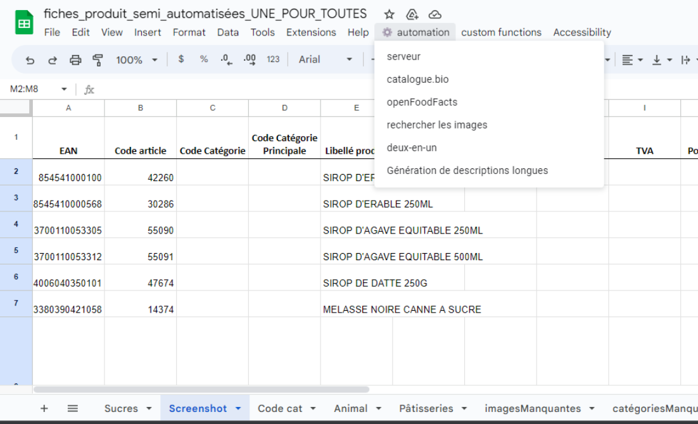
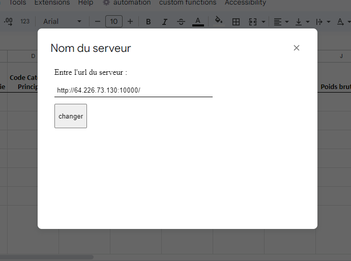
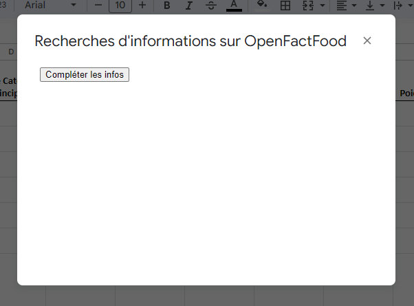
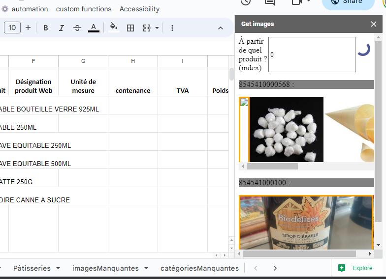
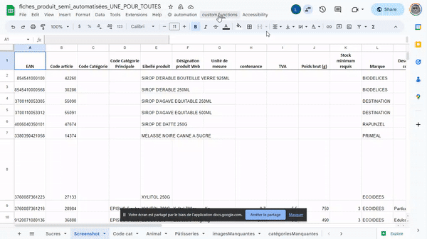

Leopold digitalise son activité avec un site e-commerce. Ce site nécessite environ 3000 fiches "produit" pour être attractif.
Le système (aussi désigné comme "automatisations") proposé permet de simplifier et d'automatiser certaines tâches dans le processus de remplissage de fiches "produit".
Ces fiches "produit" au format excel ou Sheets contiennent actuellement 32 champs par produit (les champs avec une astérisque* sont complétés ou partiellement complétés par le système):
EAN : C'est le genCode du produit;
Code article : C'est le code attribué au produit par Videor.
Code Catégorie : Ce sont les codes permettant d'indexer un produit dans un des menus du site.
(cf Code cat) par exemple le code FRAIS-1 indexe le produit dans le rayon Rayon frais > Produits de la mer.
Code Catégorie Principale : Idem que pour le Code Catégorie, à la différence qu'il est unique.
Désignation produit web* : Il s'agit du titre du produit.
Unité de mesure* : Kilogramme(Kg) ou Litre (L).
Contenance* : C'est la contenance ou le poids du produit sans le conditionnement exprimée selon Unité de mesure.
Poids brut : Contenance du produit emballage compris exprimée en grammes.
Stock minimum requis* : Stock en-dessous duquel le produit apparaît comme indisponible sur le site. Initialement à 3, il a été abaissé à 1 pour mieux prendre en compte les nombreux petits stocks.
Marque* : Il s'agit de la marque du produit telle qu'elle apparaît sur le conditionnement. (Attention : Ce n'est pas le fournisseur !).
Description courte : Il s'agit d'une description d'une à deux phrases mettant en valeur quelques caractéristiques du produit.
Description longue* : Il s'agit d'une description présentant le produit selon une structure variable. Lorsque cela est possible, elle est comme suit :
- Phrase d'introduction
- Cas d'utilisation
- Fabrication
- Spécificités (IGP, AOP, etc)
- Public adapté
- Bienfaits
- Description de la marque
Ingrédients* : Chaque ingrédient est séparé du suivant par une virgule et s'il est bio, marqué d'une astérisque. A la fin de cette liste est ajouté *Issu de l'agriculture biologique.
Frais* : Ce champ prend la valeur non de manière systématique.
Visuel 1* : Il s'agit du nom du premier visuel du produit nommé <EAN>.<extension>
Visuel 2 : Il s'agit d'un second visuel.
Étiquette : Il s'agit d'une liste d'étiquettes qui apparaîtront sur la miniature du produit en haut à gauche. Ce champ accepte une ou plusieurs des valeurs suivantes (toutes en majuscule):
- PETIT PRIX
- FORMATS ECO
- TOP VENTE
- COUP DE COEUR
- LOCAL
Caractéristiques prioritaires : Il s'agit d'une caractéristique qui permettra d'effectuer des recherches par filtre sur le site. Elle peut prendre les valeurs suivantes :
- COMMERCE EQUITABLE
- CRU
- CRUELTY FREE
- FABRIQUE EN FRANCE
- LOCAL
- SUPER ALIMENT
- ADAPTE AUX ENFANTS
- SANS HUILE DE PALME
- VEGAN
- VEGETARIEN
- ZERO DECHET
- SANS GLUTEN
- SANS LACTOSE
- SANS SUCRE AJOUTE
- SANS SULFITE
- SANS SULFATE
- REDUIT EN SEL
Caractéristiques secondaires : Il s'agit d'une liste de caractéristiques. (liste ci-dessus)
Conseil de préparation
Coup de coeur de l'équipe
Quantité nutritionnelle* : Il s'agit de la quantité de référence pour laquelle les valeurs nutritionnelles sont données. Ce champ prend systématiquement la valeur 100gr.
Energie Kj/Kcal* : La valeur de champ suit la forme <Kj>Kj/<Kcal>Kcal.
Matières grasses* : La valeur de champ prend la forme <valeur>g.
Dont acides gras saturés* : La valeur de champ prend la forme <valeur>g.
Glucides* : La valeur de champ prend la forme <valeur>g.
Dont sucres* : La valeur de champ prend la forme <valeur>g.
Fibres* : La valeur de champ prend la forme <valeur>g.
Protéines* : La valeur de champ prend la forme <valeur>g.
Sel* : La valeur de champ prend la forme <valeur>g.
Dans cette section, l'usage des automatisations sera détaillée du point de vue de l'utilisateur. Pour commencer, rendez-vous sur ce document. Créer une nouvelle feuille et remplissez-la avec vos informations de base (tirées de Videor). Vous aurez accès un menu nommé automation.
Cette fonctionnalité permet de changer l'url du serveur qui supporte les automatisations. Il peut être distant ou local.
Cette fonctionnalité permet de récupérer toutes les informations correspondantes aux EANs présents dans la feuille sur le site Catalogue.bio . Ces informations sont remplies dans les cellules correspondantes :
- Désignation produit web.
- Unité de mesure.
- Contenance.
- Ingrédients.
- Frais.
- Quantité nutritionnelle.
- Energie Kj/Kcal.
- Matières grasses
- Dont acides gras saturés.
- Dont acides gras saturés.
- Glucides.
- Dont sucres.
- Fibres.
- Protéines.
- Sel.
Vous devez pour commencer fournir un nom de collection qui a le moins de probabilité d'avoir utilisé précédemment.
Utilisez des majuscules et des underscore ( _ ).
Puis appuyez sur Rechercher.

Les données récupérées écraseront celles qui sont déjà présentes.
Souvent les informations fournies pour les valeurs nutritionnelles et les ingrédients par catalogue.bio sont parcellaires. Elles sont donc complétées grâce à cette automatisation.
Il vous suffit de cliquer sur Compléter les infos.

Les données récupérées préserveront celles qui sont déjà présentes.
Cette automatisation permet de récupérer des images correspondant aux EANs présents dans la feuille. Il y a en a 10 par EAN.
Pour choisir une image, cliquer dessus, elle sera téléchargée et son nom sera ajouté au champ Visuel 1.
Pour commencer, entrez l'index de départ (rangée de départ - 1 soit ici 1 - 1 = 0) puis appuyez sur
Entrée.

. Par exemple, si vous voulez récupérer les images à partir de la rangée 28, entrez 27.
Les images encadrées de orange sont les images récupérées sur Openfoodfacts.org. Les autres sont récupérées depuis Google.
Cette automatisation permet de générer une description longue grâce à ChatGPT.
Le prompt désigne le texte soumis à une IA de type LLM (Large Language Model).
Plus il est précis et plus l'IA est susceptible de produire une réponse satisfaisante.
Le prompt pour cette automatisation est donc construit comme suit :
Le prompt final soumis à ChatGPT est assemblé selon un système de template.
Nous appelerons variable un mot qui sera remplacé par du texte.
Nous appelerons champ calculé un champ qui est capable de remplacer une variable par le texte correspondant.
Une variable prend la forme [VARIABLE]. SI vous avez besoin d'utiliser plusieurs mots, séparez les par des underscores ( _ ).
Tous les champs sont calculés excepté le champ Désignation web, Ingrédients, Caractéristiques, Marque et Prompt.
Quatre variables par défauts sont disponibles :
- MARQUE
- DESIGNATION
- INGREDIENTS
- CARACTERISTIQUES
Vous pouvez créer d'autres variables en appuyant sur + à côté de Ajouter un champ.
Vous pouvez sauvegarder un champ en cliquant sur le bouton sauvegarder en-dessous du dit-champ.
Vous pouvez également le supprimer en cliquant sur supprimer.
Exemple d'utilisation :
Une fois que vous êtes satisfait du Prompt, vous pouvez le soumettre à ChatGPT en cliquant sur envoyer.

Une des problématiques que posent les IA comme ChatGPT est qu'elles inventent parfois des informations. Ici ce problème est résolu grâce à l'enrichissement web. L'enrichissement web intervient sur une partie de la schéma (si vous faites une recherche sur un élément qui n'est pas présent dans la structure, il risque de ne pas être pris en compte).
Imaginons que je souhaite enrichir mon prompt pour l'utilisation de caramels.
J'entrerai utilisation comme caractéristique dans le premier champ, j'appuierai sur Entrée puis j'entrerai Comment sont consommés les caramels ? dans le second champ de ma nouvelle ligne.
La question sera recherchée sur Google. La méta-description mise en avant par Google et les questions réponses seront automatiquement ajoutées au prompt au niveau des informations du produit.
Il est possible d'enrichir le prompt avec plusieurs requêtes web. Il faut juste s'assurer que les caractéristiques entrées soient bien différentes.
Une fois tous ces éléments pris en compte vous pouvez cliquer sur envoyer.
La réponse se retrouvera dans le dernier champ : Description longue.
Il est possible de relire et modifier le contenu avant de le placer dans le champ Description longue de la feuille Google Sheet en appuyant sur valider.
La solution proposée exploite l'environnement proposé par Google et ses multiples services : notamment Sheets et Drive.
Apps Script, un langage de programmation inventé par Google est une copie du javascript adapté à l'environnement. Ce langage permet dans Sheet d'ajouter aisément de nouvelles fonctionnalités et d'enrichir l'UI.
Drive permet de stocker les informations qui doivent être persistantes.
Le serveur Node.js permet de manipuler le navigateur chromium afin d'accéder aux informations en lignes.

...

...

...

...

- Un compte Catalogue.bio
- Un compte Google
- Un compte de service Google Cloud
- Un compte Github
- Un compte Openai
- Un compte sur chez l'hébergeur de votre choix
Leopold en possède déjà un.
Créez une copie de ce document pour votre compte, ce sera votre document de travail.
Créez un fichier Google Docs dans lequel vous écrirez ceci :
{"users":[ ]}
Ce fichier est destiné à stocker l'ensemble des utilisateurs avec leurs fichiers respectifs.
Il vous faudra conserver l'identifiant du fichier trouvable dans l'url (nous l'appelerons plus tard USERS_FILE_LIST
) :
Rendez-vous sur Google Drive. Vous devrez créer un dossier que vous nommerez comme bon vous semble. Il servira à sauvegarder les dossiers et les fichiers de tous les utilisateurs. Mettez l'identifiant du dossier de côté. Nous l'appellerons plus tard COMMON_FOLDER
Pensez à partager ce dossier avec le compte de service Google Cloud.
Avec ce compte google rendez-vous sur Google Cloud. Dans APIs & Services cliquez sur Enabled APIs & Services. Vous obtiendrez la liste des services Google. Il faudra activer ("enable") les services Google Docs API et Google Drive API. Vous devrez ensuite vous créer un compte service. Pour cela, rendez-vous dans la section Credentials du menu principal puis cliquez sur Create credentials (en haut) puis Service Account. Choisissez le nom que vous souhaitez et donner lui le rôle d'owner. Téléchargez vos identifiants au format .json et conservez-les pour plus tard.
Vous devriez normalement connaître les identifiants du compte sur lequel est versionné le projet.
Créer un nouveau token sur la page API keys puis sauvegardez-le pour plus tard.
Attention : Vous aurez besoin d'avoir un accès un SSH et que le serveur supporte l'ouverture d'un navigateur en mode headLess.
Nous sommes maintenant prêt !
- Le webhook.
- Les automatisations.
Clonez le repository qui contient le webhook avec la commande git clone <repo>.
Rentrez dans le dossier téléchargé.
Ajoutez le fichier contenant les informations d'authentification du compte de service Google cloud.
Nommez-le serviceAccountCredentials.json.
Créez un nouveau fichier nommé .env et écrivez-y :
USERS_FILE_LIST=IDduUserFile
COMMON_FOLDER=IDduCOMMONFolder
Pensez à remplacer les valeurs dans le texte ci-dessus.
Sortez de ce dossier (contenant le webhook).
Créer un dernier fichier nommé launch.sh et placez-y :
cd ../LeopoldAutomatisations
pm2 stop API.js
git reset --hard HEAD
git pull
npm install
npx playwright install
npx playwright install-deps
cp ../.env .
cp ../serviceAccountCredentials.json .
pm2 start API.js
pm2 save
Si l'environnement Nodejs n'est pas présent, installez-le :
sudo apt install nodejs
curl -L https://npmjs.org/install.sh | sudo sh
Si le service pm2 n'est pas présent, installez-le : npm install pm2@latest -g
Enfin, créer un fichier nommé webhookLaunch.sh et placez-y :
cd LeopoldWebhook
git reset --hard HEAD
git pull
cp ../.env .
cp ../serviceAccountCredentials.json .
pm2 delete index.js
npm install
pm2 start index.js
pm2 save
Téléchargez le repository contenant les automatisations.
Entrez dedans puis créez un fichier .env :
ID=identifiantDuCompteCatalogue.bio
PSWD=motDePasseDuCompteCatalogue.bio
OPENAI_API_KEY=tokenGénéréParOpenAICommençantParSk
type=authorized_user
PROD=true
PORT=8000
FOLDER_ID=1OBuMx-Ne9Ewuvzy-gIIMj9ZYGJixiQGD
USERS_FILE_LIST=13akfxQFaXLjmx3lXvhIkyqszmggb6sZUZ2cx1q3Bqk9Hc
PROD prend la valeur false en local et true en production.
FOLDER_ID ne nous intéresse pas ici. Vous pouvez lui assigner une valeur quelconque.
USERS_FILE_LIST est égal à l'id du USER_FILE_LIST que vous avez mis de côté plus tôt.
Enfin ajoutez le fichier authentification du compte de service Google cloud et renommé le serviceAccountCredentials.json.
Il ne vous reste plus qu'à exécuter les fichiers webhookLaunch.sh et setup.sh.
Clonez le repo contenant les automatisations.
Entrez dedans et ajoutez le fichier d'authentification du compte de service qui est associé au compte que vous utilisez sur Google Sheet.
Créez un fichier .env et placez-y :
ID=identifiantDuCompteCatalogue.bio
PSWD=motDePasseDuCompteCatalogue.bio
OPENAI_API_KEY=tokenGénéréParOpenAICommençantParSk
type=authorized_user
PROD=false
PORT=8000
FOLDER_ID=1OBuMx-Ne9Ewuvzy-gIIMj9ZYGJixiQGD
USERS_FILE_LIST=13akfxQFaXLjmx3lXvhIkyqszmggb6sZUZ2cx1q3Bqk9Hc
Cette fois-ci le FOLDER_ID est important, c'est l'id Google Drive d'un nouveau dossier (nommons le CATALOGUE_BIO).
Vous avez réussi l'installation des automatisations :
Vous pouvez maintenant vous rendre sur <votre-server>:4000/register pour ajouter votre adresse mail.
Vous êtes maintenant inscrit et pouvez utilisez les automatisations.
Vous pouvez ensuite vous rendre sur <votre-server>:4000/register pour ajouter votre adresse mail.
C'est fini, l'utilisateur est ajouté !